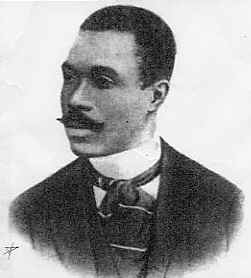
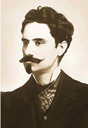
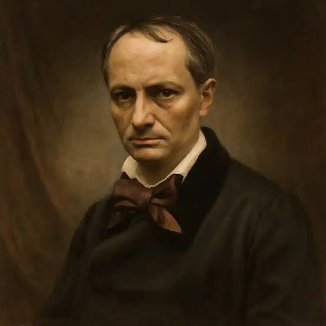
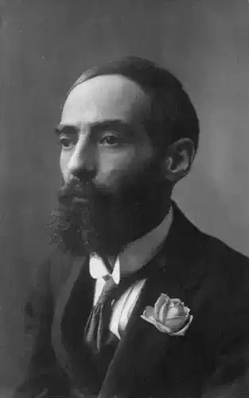

Cruz e Sousa
O "Dante Negro", principal poeta simbolista brasileiro, autor de Broquéis e Missal.

O "Dante Negro", principal poeta simbolista brasileiro, autor de Broquéis e Missal.

Mestre da poesia mística e necrófila, famoso pelos versos dedicados ao seu amor falecido, Constança.

Precursor francês do movimento com a obra As Flores do Mal, explorando o tédio e a sinestesia.

Maior nome do Simbolismo em Portugal, autor da célebre coletânea poética Clepsidra.
O Simbolismo surgiu na França no final do século XIX como uma reação ao materialismo do Parnasianismo, do Realismo e do Naturalismo. Em vez da descrição fria e objetiva do mundo, os simbolistas buscaram sugerir a realidade por meio de símbolos, intuição e mistério.
No Brasil, o movimento teve início em 1893 com a publicação das obras Broquéis (poesia) e Missal (prosa poética), de Cruz e Sousa, destacando-se pelo uso constante de metáforas, sinestesias (cruzamento de sensações) e pela busca da musicalidade nos versos.